Chapter 6 Other ComDim methods
In the previous sections, we have only used ComDim-PCA, but many other ComDim versions exist. ComDim can be regarded as a chemometric method able to compact the relevant information of the data into a reduced subspace, defined by the scores, the loadings and the saliences. Although most ComDim analyses employ Principal Component Analysis (PCA) as the core method to find this reduced space, other approaches can be used.
The R.ComDim package includes a few of those other methods, as well as some
additional functions to allow the users to create their own ComDim methods.
6.1 ComDim-Partial Least Squares Discriminant Analysis (ComDim-PLSDA)
ComDim-PLSDA is executed with the function ComDim_PLS(), by
providing a y vector with the sample class labels and setting
method = 'PLS-DA'.
The output object contains the typical PLS figures of merit
(R2X, R2Y, Q2, DQ2), the VIP (Variable Importance in
Projection) scores per variable and per block, the PLS regression coefficients
B and B0, and the predicted class assignments along with a
confusion matrix, sensitivity and specificity per class.
resultsPLSDA <- ComDim_PLS(allMB,
y = c(rep('NI',4), rep('DOX',4), rep('OFF',4)),
ndim = 2, method = 'PLS-DA')## | | | 0%[1] "The data can be used for ComDim."
## | |===== | 7% | |========== | 14% | |=============== | 21% | |==================== | 29% | |========================= | 36% | |============================================= | 64% | |================================================== | 71% | |======================================================= | 79% | |============================================================ | 86% | |================================================================= | 93% | | | 0% | |======================================================================| 100%## CC1 CC2
## 0.93943664 0.06056336## CC1 CC2
## 0.3444983 0.8050514## DOX NI OFF
## 0.4779148 0.2743497 0.4987132## [1] 0.7180239# The model results to predict all the classes
# Classification outputs
resultsPLSDA@Prediction$confusionMatrix## $DOX
## trueClass1 trueClass0
## predClass1 4 0
## predClass0 0 8
##
## $NI
## trueClass1 trueClass0
## predClass1 4 0
## predClass0 0 8
##
## $OFF
## trueClass1 trueClass0
## predClass1 4 0
## predClass0 0 8## DOX NI OFF
## 1 1 1## DOX NI OFF
## 1 1 1## p tot
## 14679 0.3512878 0.3512878
## 23849 0.4585939 0.4585939
## 12858 0.5029650 0.5029650
## 14673 1.0342762 1.0342762
## 235339 0.9376274 0.9376274
## 66925 0.4022352 0.4022352# Plot saliences
saliencesPLSDA <- resultsPLSDA@Saliences %>%
as.data.frame() %>%
mutate(dataset = rownames(.)) %>%
pivot_longer(cols = c('CC1','CC2'),
names_to = 'CC',
values_to = 'Salience')
ggplot(data = saliencesPLSDA,
aes(x = CC, y = Salience, group = dataset )) +
geom_bar(stat = 'identity', position = 'dodge',
aes(fill = dataset)) +
theme_minimal() +
labs(title = 'ComDim Saliences')
# Plot scores
scoresTable <- MakeComDimScoresTable(model = resultsPLSDA)
scoresTable_wider <- scoresTable %>%
mutate(sample.type = case_when(grepl('DOX', sample.id) ~ 'DOX',
grepl('NI', sample.id) ~ 'NI',
grepl('OFF', sample.id) ~ 'OFF')) %>%
dplyr::select(sample.id, sample.type, block.name, scores.type.dim, value) %>%
dplyr::group_by(sample.id, sample.type, scores.type.dim, block.name) %>%
pivot_wider(names_from = scores.type.dim, values_from = value)
ggplot(data = scoresTable_wider) +
geom_point(aes(x = T.scores1, y = T.scores2,
color = sample.type, shape = block.name)) +
geom_point(aes(x = Q.scores1, y = Q.scores2,
fill = sample.type, shape = block.name),
size = 3, shape = 24, color = 'black') +
theme_minimal() +
labs(title = 'ComDim scores - PLSDA', x = 'CC1', y = 'CC2')
# Plot top 20 VIP variables
vip_df <- data.frame(
variable = names(resultsPLSDA@VIP),
VIP = resultsPLSDA@VIP
) %>%
arrange(desc(VIP)) %>%
slice_head(n = 20)
ggplot(vip_df, aes(x = reorder(variable, VIP), y = VIP)) +
geom_bar(stat = 'identity', fill = 'steelblue') +
coord_flip() +
theme_minimal() +
labs(title = 'Top 20 VIP variables (PLSDA)', x = '', y = 'VIP')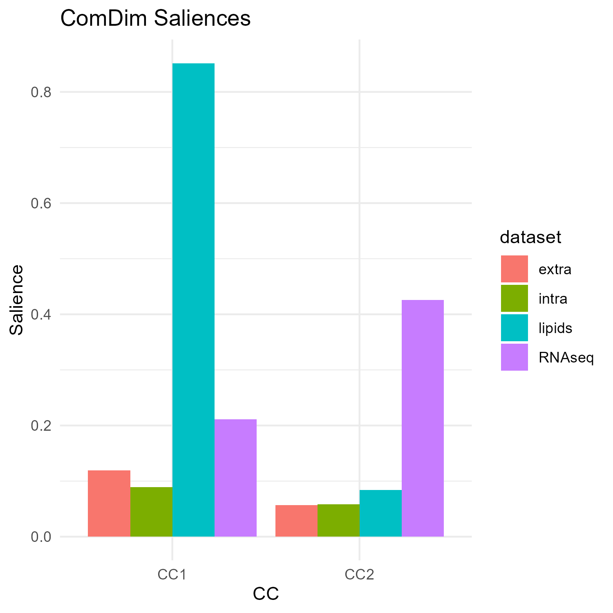
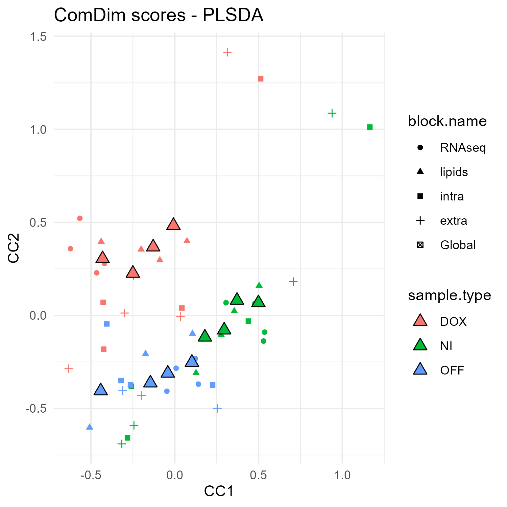
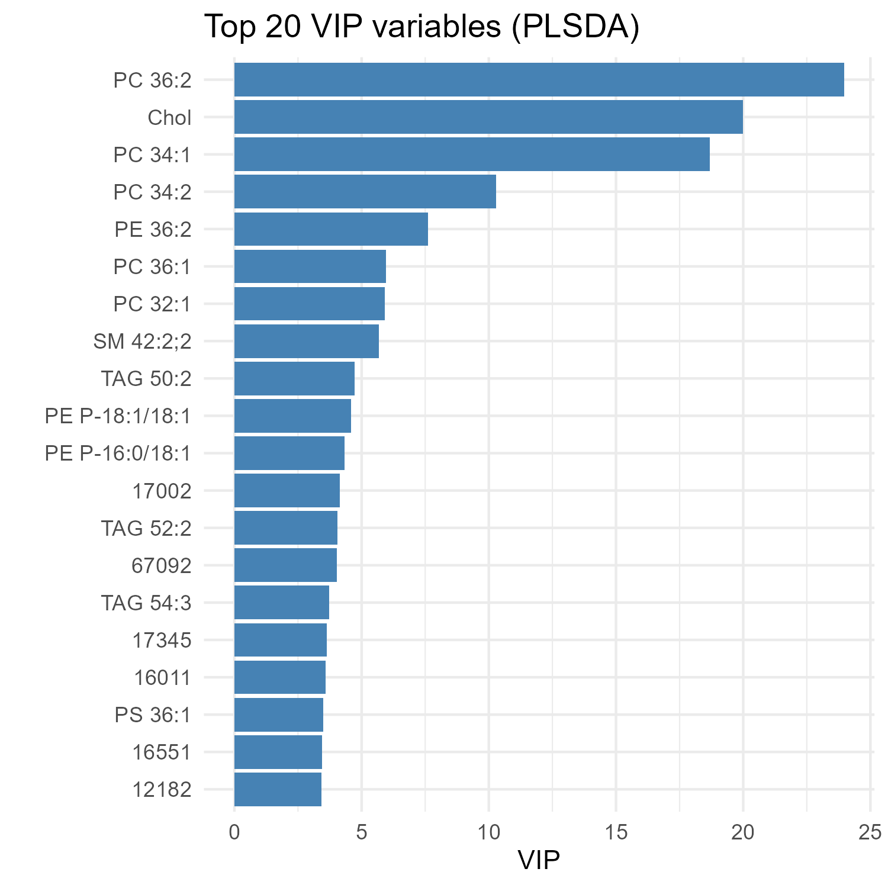
6.1.1 Predicting new samples with ComDim-PLSDA
The function PredictMultiBlock() projects a new MultiBlock dataset into an
existing ComDim model. It computes global and local scores for the new
samples, predicts the Y-block (class assignments for PLSDA), and — when the
true labels y are supplied — also returns Q2, DQ2, sensitivity,
specificity and a confusion matrix for the new samples.
# Split the dataset into a training set (9 samples, 3 per class)
# and a test set (3 samples, 1 per class).
allMB_train <- FilterSamplesMultiBlock(allMB, sampleNames(allMB)[c(1:3, 5:7, 9:11)])
allMB_test <- FilterSamplesMultiBlock(allMB, sampleNames(allMB)[c(4, 8, 12)])
y_train <- c(rep('NI', 3), rep('DOX', 3), rep('OFF', 3))
# Fit the model on the training set
modelPLSDA <- ComDim_PLS(allMB_train, y = y_train,
ndim = 2, method = 'PLS-DA')
# Project the 3 test samples; supply true labels to get Q2/DQ2 and statistics
y_test <- c('NI', 'DOX', 'OFF')
predPLSDA <- PredictMultiBlock(allMB_test, y = y_test, model = modelPLSDA)
predPLSDA@Prediction$Y.pred # Raw predicted Y scores --> Need to have class names and sample names.
predPLSDA@Prediction$predClass # Predicted class assignments
predPLSDA@Prediction$confusionMatrix # Confusion matrix for test set
predPLSDA@Q2 # Q2 for test samples per class
predPLSDA@DQ2 # DQ2 for test samples per class
# Plot training and test samples on the model score space
trainQ <- as.data.frame(modelPLSDA@Q.scores) %>%
mutate(sample.id = rownames(modelPLSDA@Q.scores),
sample.type = case_when(grepl('DOX', sample.id) ~ 'DOX',
grepl('NI', sample.id) ~ 'NI',
grepl('OFF', sample.id) ~ 'OFF'),
set = 'Train')
testQ <- as.data.frame(predPLSDA@Q.scores) %>%
mutate(sample.id = rownames(predPLSDA@Q.scores),
sample.type = y_test,
set = 'Test')
allQ_PLSDA <- bind_rows(trainQ, testQ)
ggplot(allQ_PLSDA, aes(x = CC1, y = CC2, color = sample.type, shape = set)) +
geom_point(size = 3) +
theme_minimal() +
labs(title = 'PLSDA: Training and test scores', x = 'CC1', y = 'CC2')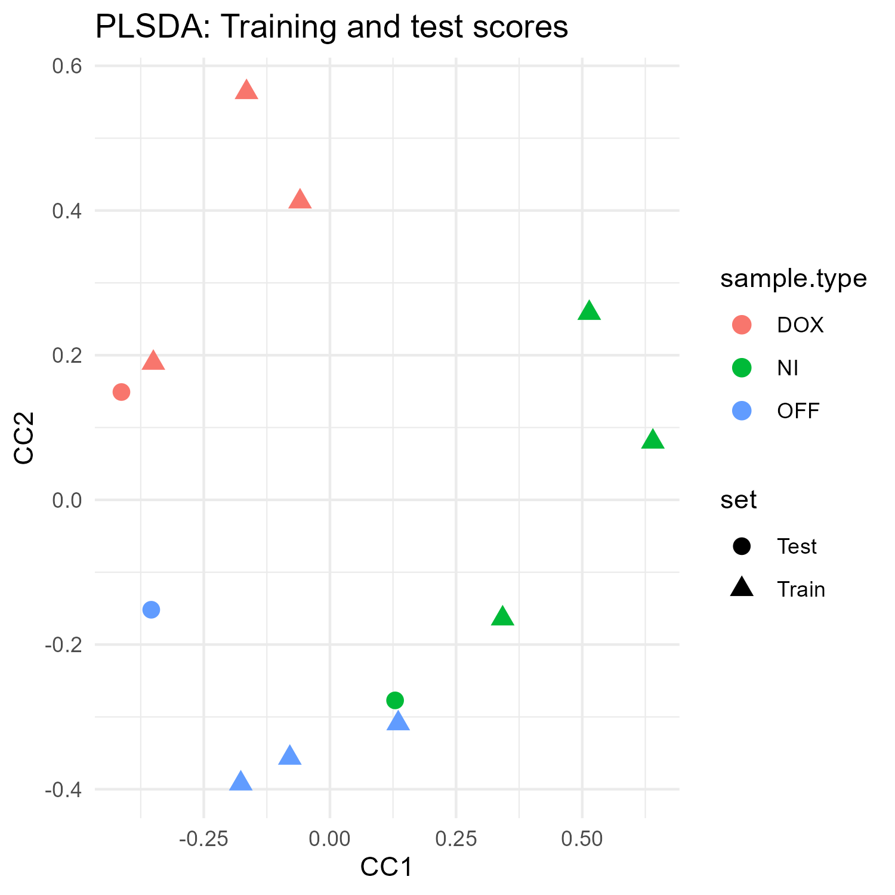
6.2 ComDim-Partial Least Squares Regression (ComDim-PLSR)
ComDim-PLS can be executed with the same function ComDim_PLS(), by
providing a y regression vector (i.e. numerical) and setting
method = 'PLS-R'.
The output contains the typical PLS figures of merit
(R2X, R2Y, Q2), the VIP scores, the PLS regression
coefficients B and B0, and the predicted y values.
# Training: 9 samples (3 per class); test: 3 samples (one per class, held out).
# The training and test sets are non-overlapping.
allMB_train <- FilterSamplesMultiBlock(allMB, sampleNames(allMB)[setdiff(1:12,c(2,6,10))])
allMB_test <- FilterSamplesMultiBlock(allMB, sampleNames(allMB)[c(2, 6, 10)])
# Numerical response: 1 = NI, 2 = DOX, 3 = OFF
y_train <- rep(1:3, each = 3)
# Fit ComDim-PLS-R with 2 components
resultsPLSR <- ComDim_PLS(allMB_train,
y = y_train,
ndim = 2, method = 'PLS-R')
# Figures of merit
resultsPLSR@R2X
resultsPLSR@R2Y # Cumulative R2Y per CC (CC1, CC2)
resultsPLSR@Q2 # Cross-validated Q2
# Regression coefficients and training-set predictions
head(resultsPLSR@PLS.model$B) # B has variable names as rownames
resultsPLSR@Prediction$Y.pred # Training predictions (sample names in rownames)
# Project the test set
y_test <- c(1, 2, 3) # True y values for the 3 test samples
predPLSR <- PredictMultiBlock(allMB_test, y = y_test, model = resultsPLSR)
predPLSR@Prediction$Y.pred # Predicted y for the 3 test samples
predPLSR@Q2 # Q2 for the test set
# Plot predicted vs actual Y for training and test sets
pred_df <- rbind(
data.frame(actual = y_train,
predicted = as.vector(resultsPLSR@Prediction$Y.pred),
set = 'Train'),
data.frame(actual = y_test,
predicted = as.vector(predPLSR@Prediction$Y.pred),
set = 'Test')
)
ggplot(pred_df, aes(x = actual, y = predicted, color = set)) +
geom_point(size = 3) +
geom_abline(intercept = 0, slope = 1, linetype = 'dashed') +
theme_minimal() +
labs(title = 'PLSR: Predicted vs Actual', x = 'Actual Y', y = 'Predicted Y')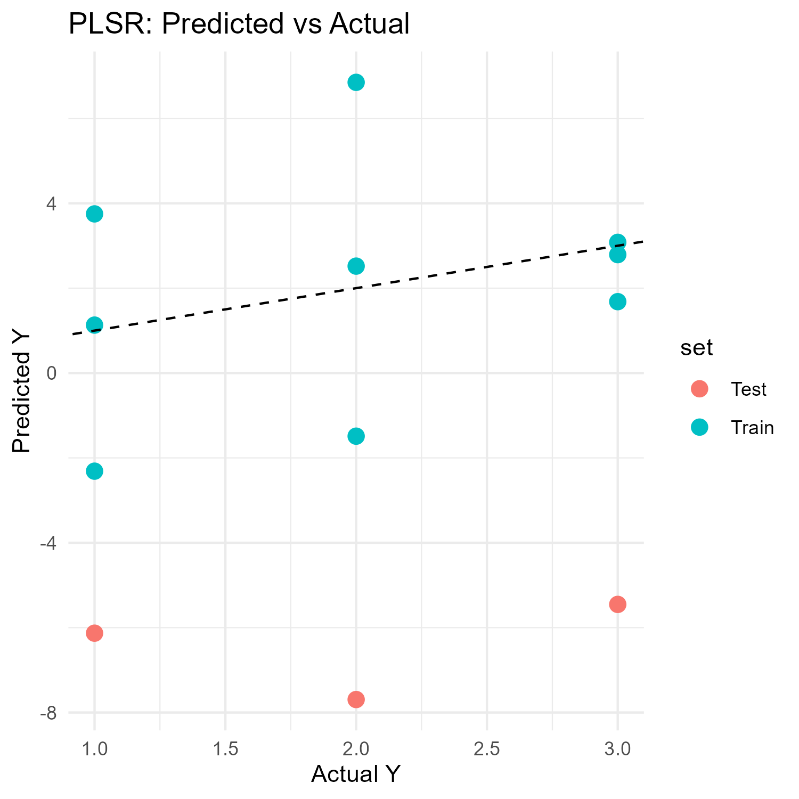
6.3 ComDim-Orthogonal PLS (ComDim-OPLS)
ComDim-OPLS is executed with the function ComDim_OPLS(). It extends
the PLS formulation by extracting orthogonal components — systematic
variation in X that is uncorrelated with Y — before computing the predictive
component(s). This produces a cleaner separation between structured noise and
the Y-relevant signal, and is especially useful when many orthogonal sources of
variation exist in the data (e.g. batch effects, biological confounders).
The function supports both discriminant analysis (method = 'OPLS-DA')
and regression (method = 'OPLS-R'). The number of predictive components
is controlled by ndim (default 1) and the number of orthogonal components by
nort (default 1).
The output object is a ComDim object that contains, in addition to the usual
predictive slots:
@Orthogonal— a list with the orthogonal scores (Q.scores,T.scores), orthogonal loadings (P.loadings.ort), and orthogonal saliences (Saliences.ort).@VIP/@VIP.block— VIP scores with three columns per block:p(predictive VIP),o(orthogonal VIP), andtot(combined total VIP, used in@VIP).@R2X,@R2Y,@Q2,@DQ2(OPLS-DA only) — the usual figures of merit.
# ComDim-OPLS-DA: 1 predictive component, 1 orthogonal component
resultsOPLSDA <- ComDim_OPLS(allMB,
y = c(rep('NI', 4), rep('DOX', 4), rep('OFF', 4)),
ndim = 1, nort = 1,
method = 'OPLS-DA')## | | | 0%[1] "The data can be used for ComDim."
## | |===== | 7% | |========== | 14% | |=============== | 21% | |==================== | 29% | |========================= | 36% | |============================================= | 64% | |================================================== | 71% | |============================================================ | 86% | |================================================================= | 93% | | | 0% | |======================================================================| 100%## CC1 ort1
## 0.2792416 0.1959382## CC1 ort1
## 0.46482603 0.02137637## DOX NI OFF
## 0.69705590 0.50366598 -0.06617125## DOX NI OFF
## 0.6396892 0.4772644 -0.1612455## CC1
## 1 - NI_A 0.3575418
## 1 - NI_B 0.3271385
## 1 - NI_C 0.2698930
## 1 - NI_D 0.3300657
## 2 - DOX_A -0.3863582
## 2 - DOX_B -0.3833217## CC1
## RNAseq 0.84625846
## lipids 0.45961136
## intra 0.06285837
## extra 0.11622367## [1] 1## ort1
## 1 - NI_A 0.352143315
## 1 - NI_B -0.082924407
## 1 - NI_C 0.330748614
## 1 - NI_D -0.238108031
## 2 - DOX_A 0.384526417
## 2 - DOX_B 0.003552761## ort1
## RNAseq 0.1056864
## lipids 0.5556791
## intra 0.3167450
## extra 0.3548201# VIP scores (predictive 'p', orthogonal 'o', total 'tot')
head(resultsOPLSDA@VIP) # Global total VIP (one value per variable)## 14679 23849 12858 14673 235339 66925
## 0.3033971 0.4793720 0.2572409 0.9179046 0.7452123 0.3048091## p o tot
## 14679 0.4249442 0.05934628 0.3033971
## 23849 0.5449294 0.40329517 0.4793720
## 12858 0.1304385 0.33960503 0.2572409
## 14673 1.2427530 0.37505025 0.9179046
## 235339 1.0527082 0.04988248 0.7452123
## 66925 0.3672111 0.22577238 0.3048091## predClass
## 1 - NI_A NI
## 1 - NI_B NI
## 1 - NI_C NI
## 1 - NI_D NI
## 2 - DOX_A DOX
## 2 - DOX_B DOX
## 2 - DOX_C DOX
## 2 - DOX_D DOX
## 3 - OFF_A NI
## 3 - OFF_B NI
## 3 - OFF_C NI
## 3 - OFF_D DOX## $DOX
## trueClass1 trueClass0
## predClass1 4 0
## predClass0 1 7
##
## $NI
## trueClass1 trueClass0
## predClass1 4 0
## predClass0 3 5
##
## $OFF
## trueClass1 trueClass0
## predClass1 0 4
## predClass0 0 8## DOX NI OFF
## 1 1 0## DOX NI OFF
## 0.875 0.625 1.000# Plot scores: predictive vs orthogonal component
scoresOPLS <- MakeComDimScoresTable(model = resultsOPLSDA,
include = c('Q.scores', 'Q.scores.ort'))
scoresOPLS_wider <- scoresOPLS %>%
filter(block.name %in% c('Global', 'Global.ort')) %>%
mutate(sample.type = case_when(grepl('DOX', sample.id) ~ 'DOX',
grepl('NI', sample.id) ~ 'NI',
grepl('OFF', sample.id) ~ 'OFF')) %>%
dplyr::select(sample.id, sample.type, scores.type.dim, value) %>%
pivot_wider(names_from = scores.type.dim, values_from = value)
ggplot(scoresOPLS_wider, aes(x = Q.scores1, y = Q.scores.ort1, color = sample.type)) +
geom_point(size = 3) +
theme_minimal() +
labs(title = 'ComDim OPLS-DA scores',
x = 'Predictive CC1', y = 'Orthogonal CC1')
# Plot predictive and orthogonal saliences side by side
saliences_pred <- as.data.frame(resultsOPLSDA@Saliences) %>%
mutate(dataset = rownames(resultsOPLSDA@Saliences),
component = 'Predictive') %>%
rename(Salience = CC1)
saliences_ort <- as.data.frame(resultsOPLSDA@Orthogonal$Saliences.ort) %>%
mutate(dataset = rownames(resultsOPLSDA@Orthogonal$Saliences.ort),
component = 'Orthogonal') %>%
rename(Salience = ort1)
bind_rows(saliences_pred, saliences_ort) %>%
ggplot(aes(x = component, y = Salience, fill = dataset)) +
geom_bar(stat = 'identity', position = 'dodge') +
theme_minimal() +
labs(title = 'ComDim OPLS-DA Saliences',
x = 'Component type', y = 'Salience')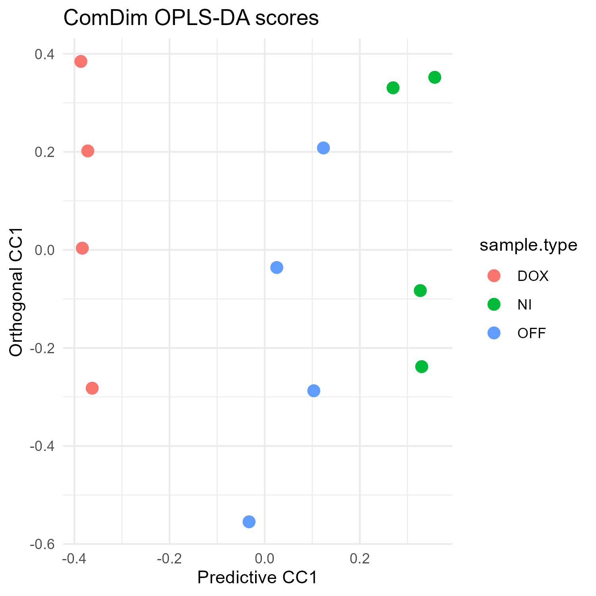
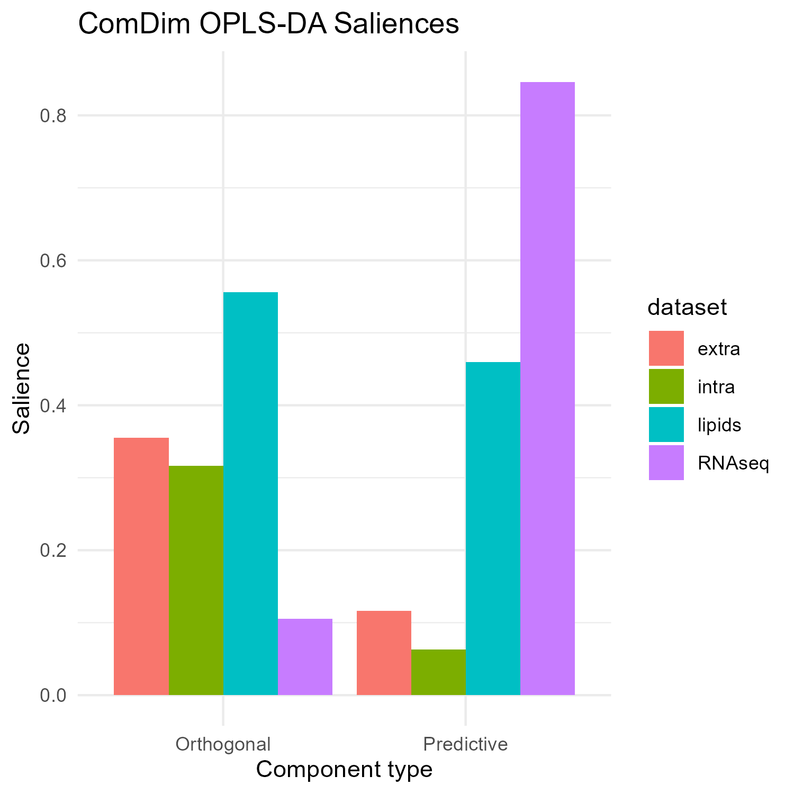
The predictive scores can be projected onto new data with PredictMultiBlock().
For OPLS models the function first applies orthogonal deflation (using the
stored P.loadings.ort) before computing the predictive scores, so the
pipeline is consistent with the calibration procedure.
# Project the last 4 samples through the OPLS-DA model
allMB_test <- FilterSamplesMultiBlock(allMB, sampleNames(allMB)[9:12])
predOPLSDA <- PredictMultiBlock(allMB_test, model = resultsOPLSDA)
predOPLSDA@Q.scores # Predictive scores for the test samples
predOPLSDA@Orthogonal$Q.scores # Orthogonal scores for the test samples
predOPLSDA@Prediction$Y.pred # Predicted Y (dummy matrix)
predOPLSDA@Prediction$predClass # Predicted class assignments
# Plot training and test samples together
trainQ_opls <- as.data.frame(resultsOPLSDA@Q.scores) %>%
mutate(sample.id = rownames(resultsOPLSDA@Q.scores),
Q.ort1 = resultsOPLSDA@Orthogonal$Q.scores[, 1],
sample.type = case_when(grepl('DOX', sample.id) ~ 'DOX',
grepl('NI', sample.id) ~ 'NI',
grepl('OFF', sample.id) ~ 'OFF'),
set = 'Train')
testQ_opls <- as.data.frame(predOPLSDA@Q.scores) %>%
mutate(sample.id = rownames(predOPLSDA@Q.scores),
Q.ort1 = predOPLSDA@Orthogonal$Q.scores[, 1],
sample.type = case_when(grepl('DOX', sample.id) ~ 'DOX',
grepl('NI', sample.id) ~ 'NI',
grepl('OFF', sample.id) ~ 'OFF'),
set = 'Test')
allQ_opls <- bind_rows(trainQ_opls, testQ_opls)
ggplot(allQ_opls, aes(x = CC1, y = Q.ort1, color = sample.type, shape = set)) +
geom_point(size = 3) +
theme_minimal() +
labs(title = 'OPLS-DA: Training and test scores',
x = 'Predictive CC1', y = 'Orthogonal CC1')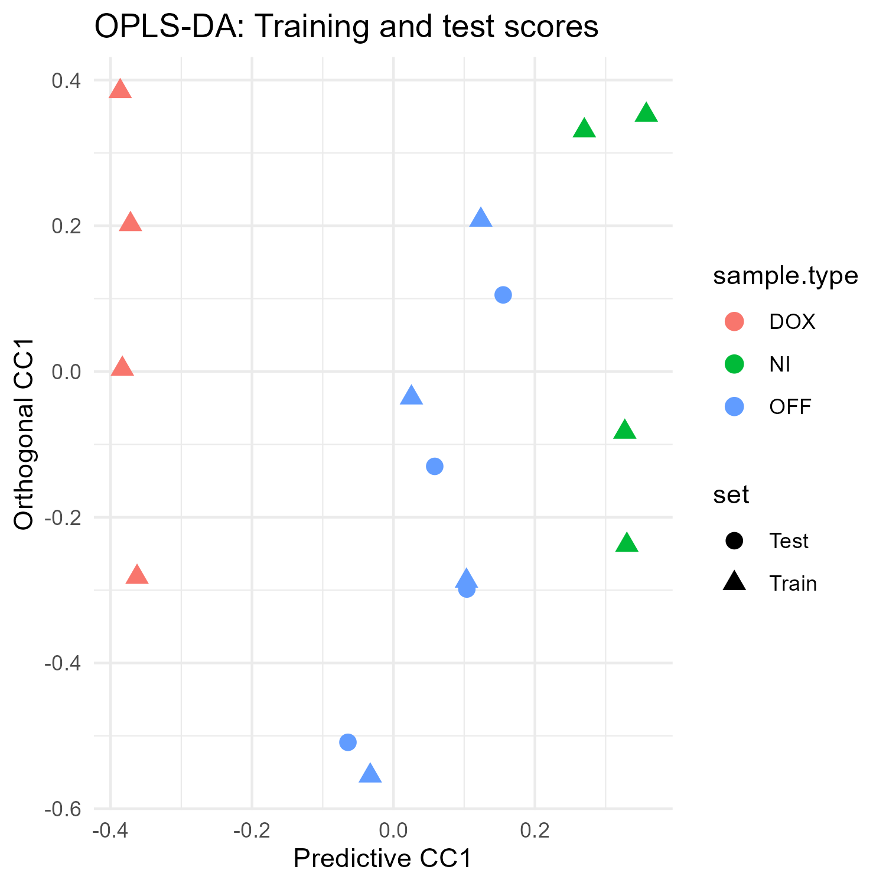
For regression with OPLS, simply switch method = 'OPLS-R' and supply a
numerical y vector:
resultsOPLSR <- ComDim_OPLS(allMB,
y = c(rep(1, 4), rep(5, 4), rep(10, 4)),
ndim = 1, nort = 1,
method = 'OPLS-R')
resultsOPLSR@R2X
resultsOPLSR@R2Y
resultsOPLSR@Q2
head(resultsOPLSR@Prediction$Y.pred)
# Plot predicted vs actual Y
y_actual <- c(rep(1, 4), rep(5, 4), rep(10, 4))
ggplot(data.frame(actual = y_actual,
predicted = as.vector(resultsOPLSR@Prediction$Y.pred)),
aes(x = actual, y = predicted)) +
geom_point(size = 3, color = 'steelblue') +
geom_abline(intercept = 0, slope = 1, linetype = 'dashed') +
theme_minimal() +
labs(title = 'OPLS-R: Predicted vs Actual', x = 'Actual Y', y = 'Predicted Y')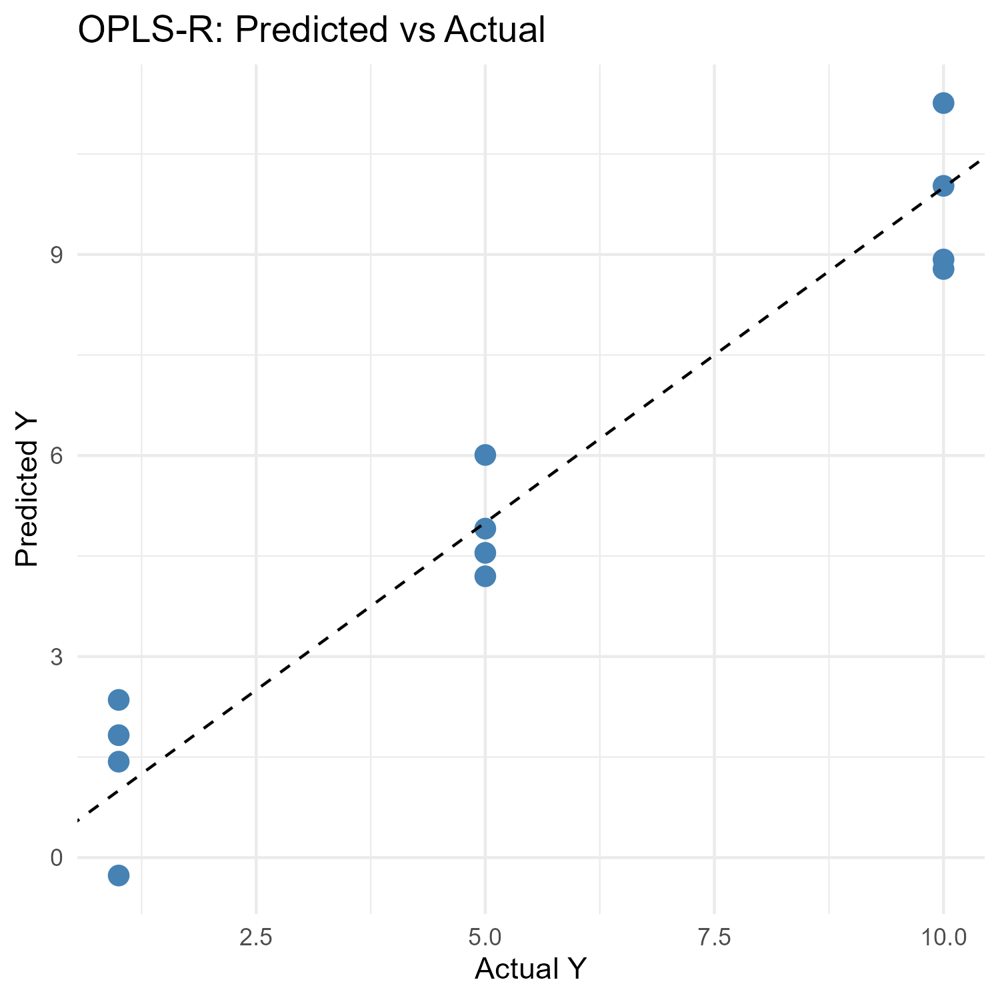
6.4 Computation strategies: CompMethod and Partitions
All ComDim functions accept a CompMethod argument that controls the internal
algorithm used to compute the common dimensions. For most datasets the default
('Normal') is fine, but the alternatives can give large speed gains when the
data geometry is extreme (many more variables than samples, or a very large
number of samples).
CompMethod |
Description |
|---|---|
'Normal' |
Exact SVD on the full concatenated block (default) |
'Kernel' |
Works on the n × n kernel matrix instead of the p × n data matrix. |
'PCT' |
PCA pre-compression before the ComDim step, recommended for large blocks with redundant variables |
'Wide' |
Column-partitioned computation, recommended for very wide blocks |
'Tall' |
Row-partitioned computation, recommended for blocks with many samples and with n >> p |
The Partitions argument is an integer divisor used with 'Tall' and 'Wide'
to control how the data are split. It can also be used with 'Kernel' and
'PCT' to limit memory use during pre-compression.
# Synthetic dataset: 500 samples, 2 x 1 000 variables, 4 latent sources,
# 5 % noise. seed = 42 ensures the example is fully reproducible.
allMB <- SimulateMultiBlock(n = 500, p = 2000, n_sources = 4,
noise = 0.05, n_blocks = 2, seed = 42)
allMB <- NAInfRemoveMultiBlock(allMB, na.method = 'none', minfrac = 0.2)
allMB <- NormalizeMultiBlock(allMB, method = 'norm')
# Default: exact SVD — accurate for any dataset size
t_normal <- system.time(
results_normal <- ComDim_PCA(allMB, ndim = 4, CompMethod = 'Normal')
)
# Kernel: build an n×n cross-product matrix — requires n < p per block
# (here n = 500, p = 1 000 per block, so the condition is satisfied)
t_kernel <- system.time(
results_kernel <- ComDim_PCA(allMB, ndim = 4, CompMethod = 'Kernel')
)
# PCT: compress each block with PCA first, then run ComDim on the scores
t_pct <- system.time(
results_pct <- ComDim_PCA(allMB, ndim = 4, CompMethod = 'PCT')
)
# Wide: partition the blocks column-wise; Partitions controls how many pieces
t_wide <- system.time(
results_wide <- ComDim_PCA(allMB, ndim = 4,
CompMethod = 'Wide', Partitions = 3)
)
# Tall: partition row-wise — only suitable when blocks are narrow (< 1 000 vars)
t_tall <- system.time(
results_tall <- ComDim_PCA(allMB, ndim = 4,
CompMethod = 'Tall', Partitions = 3)
)
# Elapsed time per method
timing_df <- data.frame(
Method = c('Normal', 'Kernel', 'PCT', 'Wide', 'Tall'),
Seconds = c(t_normal['elapsed'], t_kernel['elapsed'],
t_pct['elapsed'], t_wide['elapsed'],
t_tall['elapsed'])
)
print(timing_df)
ggplot(timing_df, aes(x = reorder(Method, Seconds), y = Seconds, fill = Method)) +
geom_bar(stat = 'identity') +
coord_flip() +
theme_minimal() +
theme(legend.position = 'none') +
labs(title = 'ComDim_PCA computation time by CompMethod',
subtitle = '500 samples × 2 × 1 000 variables, 4 components',
x = 'CompMethod', y = 'Elapsed time (s)')
# All methods return equivalent results; compare saliences for CC1 as a check
sal_compare <- bind_rows(
as.data.frame(results_normal@Saliences) %>%
mutate(dataset = rownames(.), method = 'Normal'),
as.data.frame(results_kernel@Saliences) %>%
mutate(dataset = rownames(.), method = 'Kernel'),
as.data.frame(results_pct@Saliences) %>%
mutate(dataset = rownames(.), method = 'PCT'),
as.data.frame(results_wide@Saliences) %>%
mutate(dataset = rownames(.), method = 'Wide'),
as.data.frame(results_tall@Saliences) %>%
mutate(dataset = rownames(.), method = 'Tall')
) %>%
pivot_longer(cols = starts_with('CC'), names_to = 'CC', values_to = 'Salience')
ggplot(sal_compare %>% filter(CC == 'CC1'),
aes(x = dataset, y = Salience, fill = method)) +
geom_bar(stat = 'identity', position = 'dodge') +
theme_minimal() +
theme(axis.text.x = element_text(angle = 45, hjust = 1)) +
labs(title = 'Saliences CC1:\nComparison across CompMethods',
x = 'Block', y = 'Salience')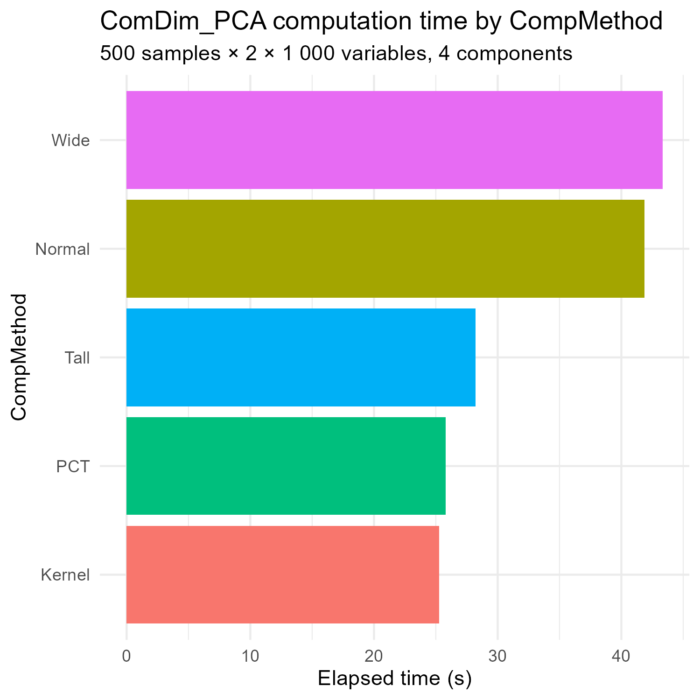
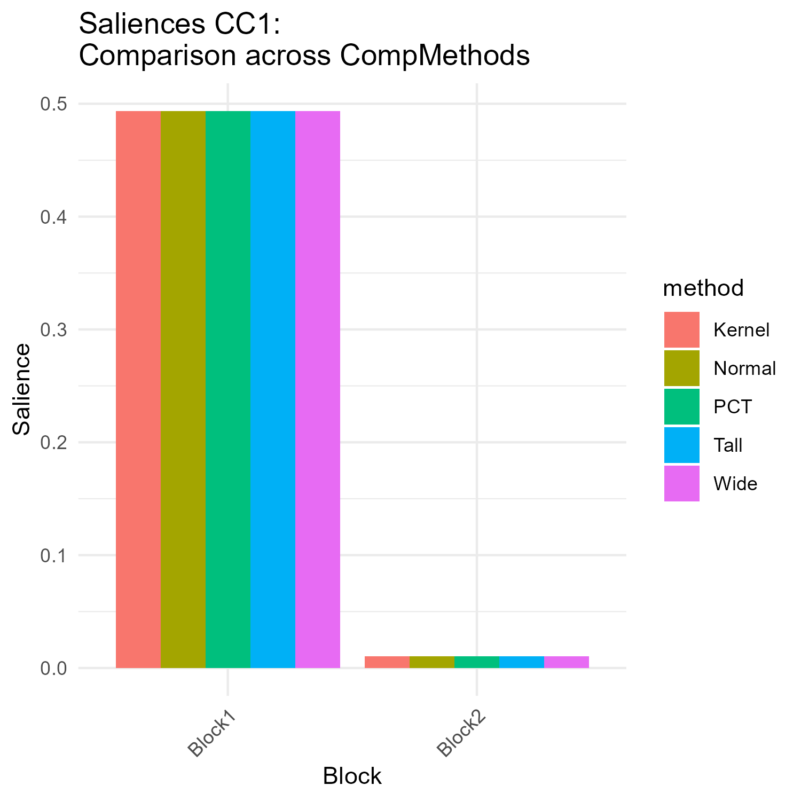
All methods return identical (or near-identical) results; the choice only affects computation time and memory footprint.
The same CompMethod and Partitions arguments are available in
ComDim_PLS() and ComDim_OPLS().
6.5 Other extensions
The ComDim_Exploratory() and ComDim_y() functions enable highly customized Com-Dim implementations for exploratory and regression/discriminant analysis. By utilizing the FUN parameter, you can integrate any chemometric method that performs bilinear decompositions into the Com-Dim core. This flexible approach generates method-specific scores alongside loadings and saliences, allowing you to simultaneously evaluate individual variable impacts and overall block contributions.
6.5.1 Example of ComDim-ICA
The function used to execute Independent Component Analysis (ICA) was
ica() from the ica package.
In order for the ComDim_Exploratory() function to understand the output
of ica(), we embedded it into another function that returns the source
estimates (representative of the samples information, analogous to the PCA
scores) named fun.ICA.
library(ica)
fun.ICA <- function(W, ndim,...){
# W is the concatenated MB.
# ndim is the number of components.
# X and nc are the arguments of ica::ica.
result <- ica::ica(W, ndim)
sources <- result$S
# The function must return the source estimates
# The analogue to the PCA scores for ICA.
return(sources)
}
# Reload mouse_ds for this section (allMB was overwritten by compmethod)
data(mouse_ds)
allMB_ica <- MultiBlock(Data = list(b1 = RNAseq3, b2 = lipids,
b3 = intra, b4 = extra))
blockNames(allMB_ica) <- c('RNAseq', 'lipids', 'intra', 'extra')
allMB_ica <- ProcessMultiBlock(allMB_ica, blocks = 'RNAseq',
FUN.SelectVars = function(x) {apply(x,2,max) > max(x, na.rm=TRUE)*0.001})
allMB_ica <- NAInfRemoveMultiBlock(allMB_ica, blocks = 'RNAseq',
na.method = 'fixed.value.all', constant = 1)
allMB_ica <- ProcessMultiBlock(allMB_ica, blocks = 'RNAseq',
FUN = function(x){t(DESeq2::rlog(t(x)))})
allMB_ica <- NAInfRemoveMultiBlock(allMB_ica, na.method = 'random.noise')
allMB_ica <- NormalizeMultiBlock(allMB_ica, method = 'norm')
resultsICA <- ComDim_Exploratory(allMB_ica, ndim = 2,
FUN = fun.ICA,
method = 'ICA')
# Plot saliences
saliencesICA <- resultsICA@Saliences %>%
as.data.frame() %>%
mutate(dataset = rownames(.)) %>%
pivot_longer(cols = c('CC1','CC2'), names_to = 'CC', values_to = 'Salience')
ggplot(data = saliencesICA,
aes(x = CC, y = Salience, group = dataset)) +
geom_bar(stat = 'identity', position = 'dodge', aes(fill = dataset)) +
theme_minimal() +
labs(title = 'ComDim-ICA Saliences')
# Plot scores
scoresICA <- MakeComDimScoresTable(model = resultsICA)
scoresICA_wider <- scoresICA %>%
mutate(sample.type = case_when(grepl('DOX', sample.id) ~ 'DOX',
grepl('NI', sample.id) ~ 'NI',
grepl('OFF', sample.id) ~ 'OFF')) %>%
dplyr::select(sample.id, sample.type, block.name, scores.type.dim, value) %>%
dplyr::group_by(sample.id, sample.type, scores.type.dim, block.name) %>%
pivot_wider(names_from = scores.type.dim, values_from = value)
ggplot(data = scoresICA_wider) +
geom_point(aes(x = T.scores1, y = T.scores2,
color = sample.type, shape = block.name)) +
geom_point(aes(x = Q.scores1, y = Q.scores2,
fill = sample.type),
size = 3, shape = 24, color = 'black') +
theme_minimal() +
labs(title = 'ComDim-ICA scores', x = 'CC1', y = 'CC2')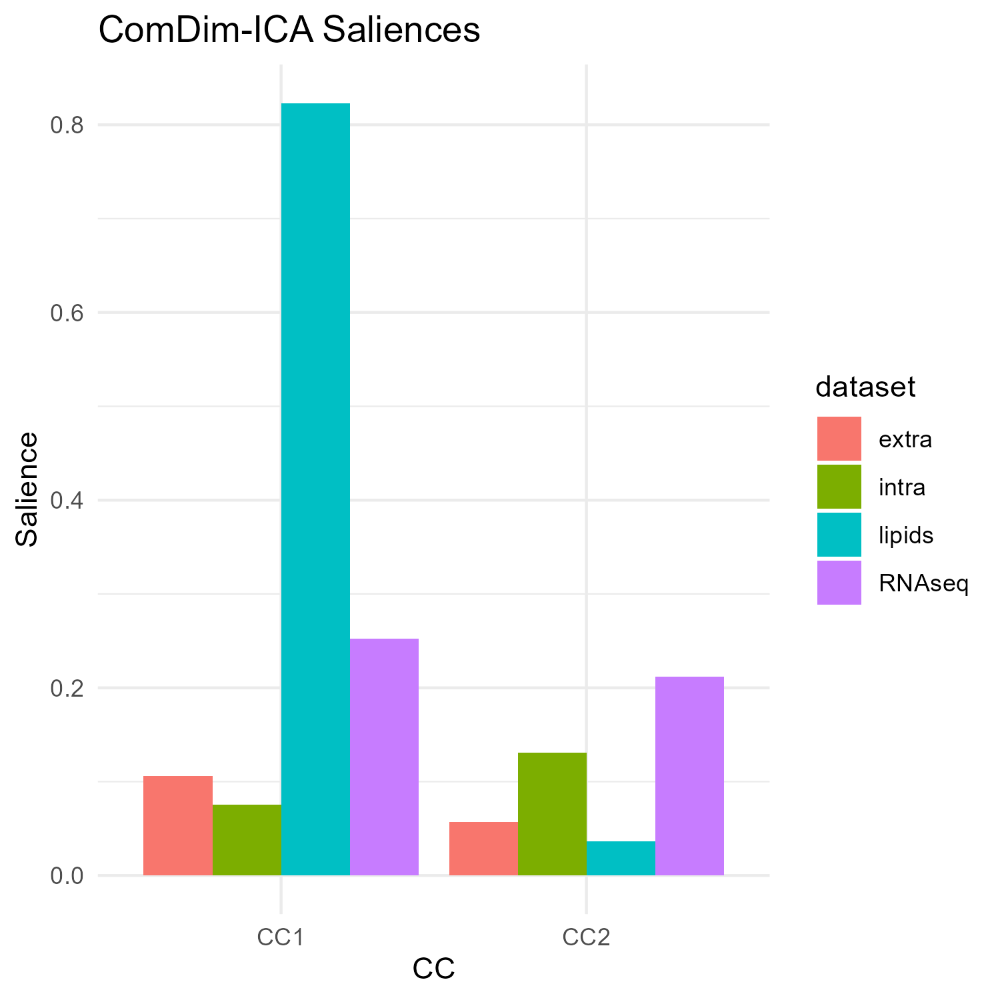
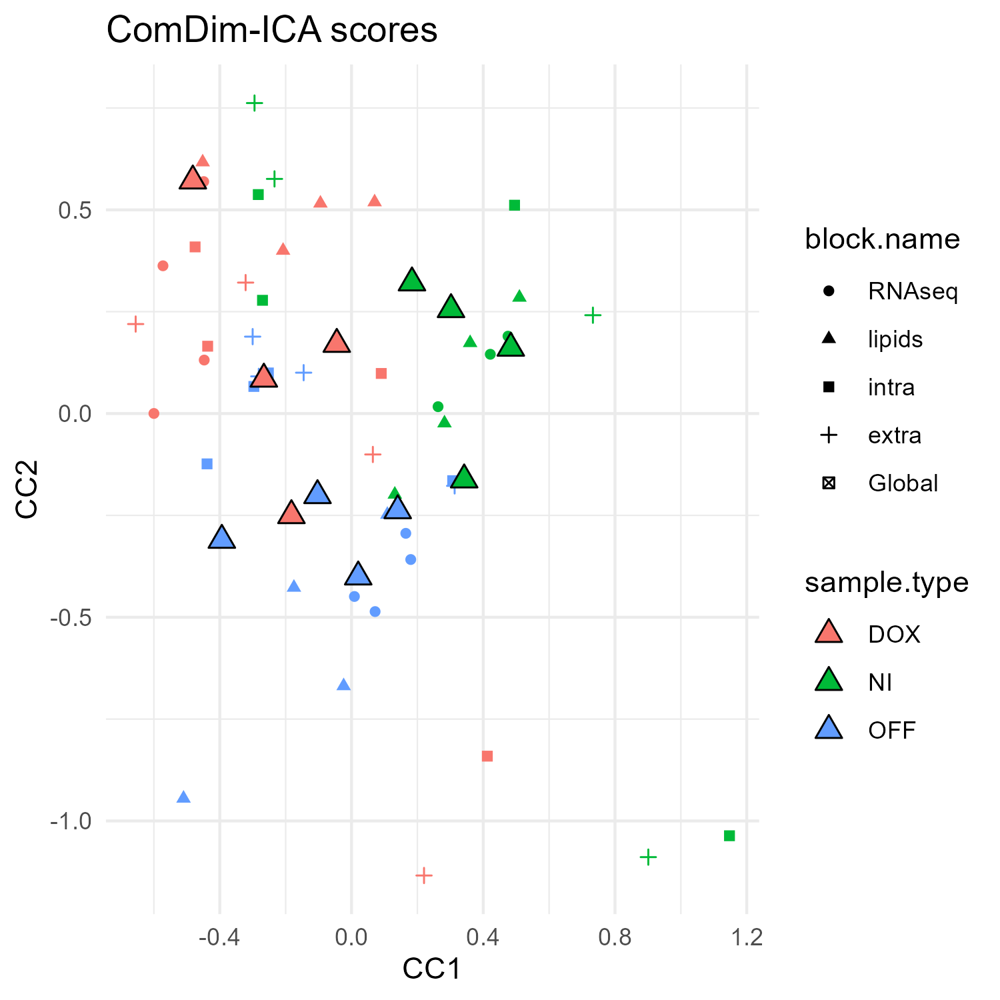
6.5.2 Example of ComDim-PLS (version ropls)
The function used to execute PLS here was opls(), obtained from the
ropls package.
In this case, fun.PLS is used to capture the output from the PLS analysis
(scores,P,W,U,Q,y).
type=regression is set to calculate R2Y, Q2,… as with ComDim_Pls_MB().
library(ropls) # From bioconductor
fun.PLS <- function(W, y, ndim,...){
# W is the concatenated MB.
# ndim is the number of components.
# X and nc are the arguments of ica::ica.
output <- list()
result <- ropls::opls(x = W, y = y, predI = ndim,
fig.pdfC = 'none',
info.txtC = 'none')
# The returning object must be a list containing the following 6 elements:
output$scores <- result@scoreMN[,1]
output$P <- result@loadingMN[,1]
output$W <- result@weightMN[,1]
output$U <- result@uMN[,1]
output$Q <- result@cMN[,1]
output$y <- result@suppLs$yModelMN
return(output)
}
resultsPLS <- ComDim_y(allMB_ica,
y = c(rep(1,4), rep(5,4), rep(10,4)),
ndim = 2,
type = 'regression',
FUN = fun.PLS,
method = 'PLS(ropls)')
resultsPLS@R2X
resultsPLS@R2Y
resultsPLS@Q2
# Plot saliences
saliencesPLS_ropls <- resultsPLS@Saliences %>%
as.data.frame() %>%
mutate(dataset = rownames(.)) %>%
pivot_longer(cols = c('CC1','CC2'), names_to = 'CC', values_to = 'Salience')
ggplot(data = saliencesPLS_ropls,
aes(x = CC, y = Salience, group = dataset)) +
geom_bar(stat = 'identity', position = 'dodge', aes(fill = dataset)) +
theme_minimal() +
labs(title = 'ComDim-PLS (ropls) Saliences')
# Plot predicted vs actual Y
ggplot(data.frame(actual = c(rep(1,4), rep(5,4), rep(10,4)),
predicted = as.vector(resultsPLS@Prediction$Y.pred)),
aes(x = actual, y = predicted)) +
geom_point(size = 3, color = 'steelblue') +
geom_abline(intercept = 0, slope = 1, linetype = 'dashed') +
theme_minimal() +
labs(title = 'PLS (ropls): Predicted vs Actual', x = 'Actual Y', y = 'Predicted Y')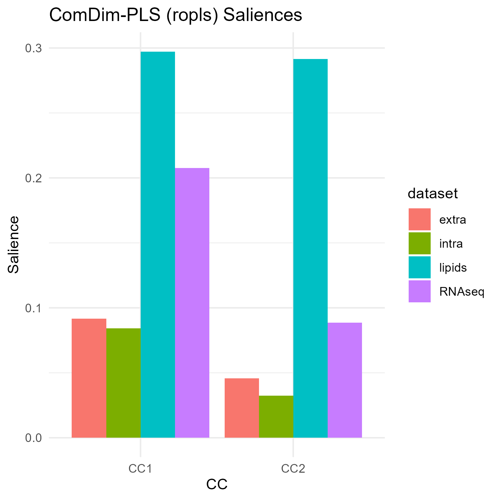
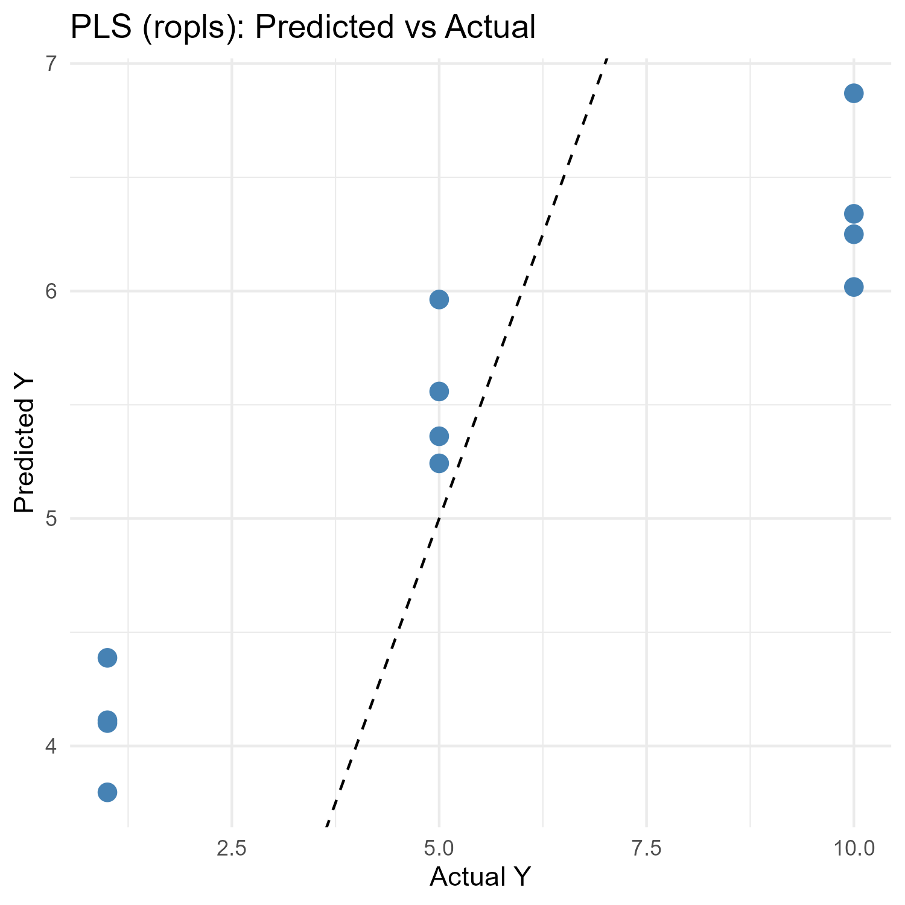
6.5.3 Example of ComDim-PLSDA (version ropls)
For ComDim-PLS-DA, we can use the same function fun.PLS as before, but we need
to specify that the type of the method is 'discriminant' and we need to
provide the sample classes in y:
resultsPLSDA_ropls <- ComDim_y(allMB_ica,
y = c(rep('NI',4), rep('DOX',4), rep('OFF',4)),
ndim = 2,
type = 'discriminant',
FUN = fun.PLS,
method = 'PLSDA(ropls)')
resultsPLSDA_ropls@R2X
resultsPLSDA_ropls@R2Y
resultsPLSDA_ropls@Q2
resultsPLSDA_ropls@DQ2
# Plot saliences
saliencesPLSDA_ropls <- resultsPLSDA_ropls@Saliences %>%
as.data.frame() %>%
mutate(dataset = rownames(.)) %>%
pivot_longer(cols = c('CC1','CC2'), names_to = 'CC', values_to = 'Salience')
ggplot(data = saliencesPLSDA_ropls,
aes(x = CC, y = Salience, group = dataset)) +
geom_bar(stat = 'identity', position = 'dodge', aes(fill = dataset)) +
theme_minimal() +
labs(title = 'ComDim-PLSDA (ropls) Saliences')
# Plot scores
scoresTable_ropls <- MakeComDimScoresTable(model = resultsPLSDA_ropls)
scoresTable_ropls_wider <- scoresTable_ropls %>%
mutate(sample.type = case_when(grepl('DOX', sample.id) ~ 'DOX',
grepl('NI', sample.id) ~ 'NI',
grepl('OFF', sample.id) ~ 'OFF')) %>%
dplyr::select(sample.id, sample.type, block.name, scores.type.dim, value) %>%
dplyr::group_by(sample.id, sample.type, scores.type.dim, block.name) %>%
pivot_wider(names_from = scores.type.dim, values_from = value)
ggplot(data = scoresTable_ropls_wider) +
geom_point(aes(x = T.scores1, y = T.scores2,
color = sample.type, shape = block.name)) +
geom_point(aes(x = Q.scores1, y = Q.scores2,
fill = sample.type),
size = 3, shape = 24, color = 'black') +
theme_minimal() +
labs(title = 'ComDim-PLSDA (ropls) scores', x = 'CC1', y = 'CC2')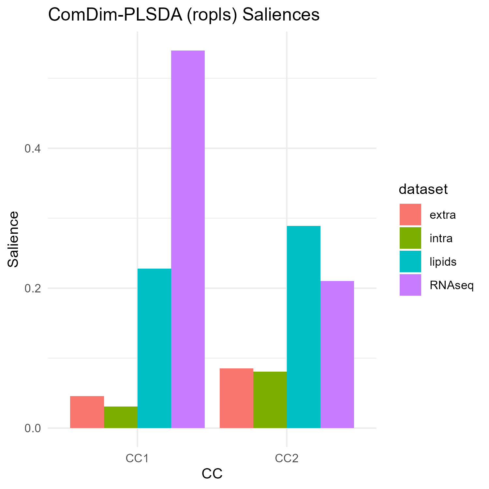
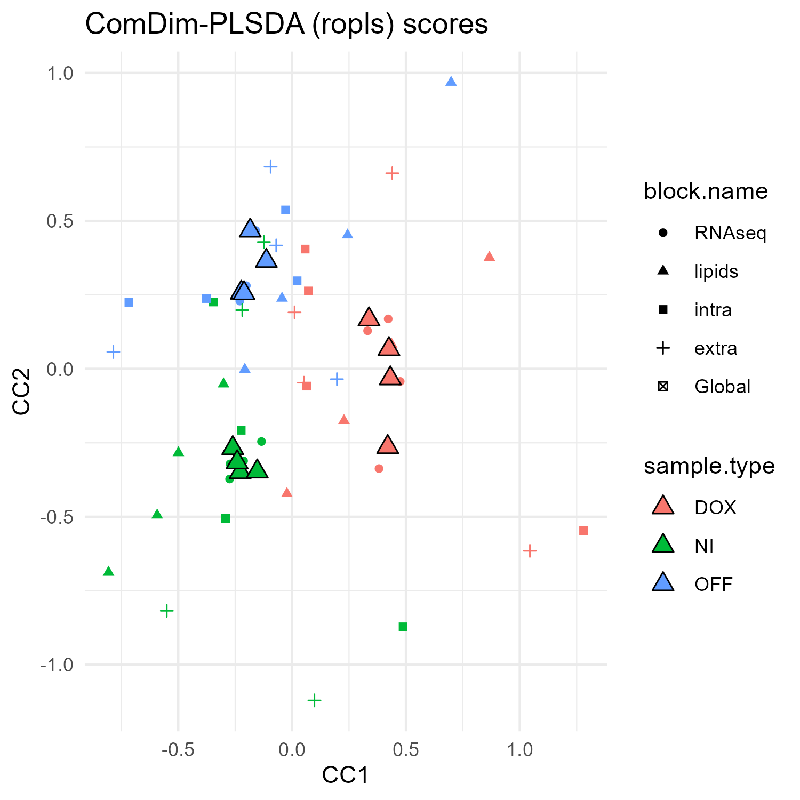
6.5.4 Example of ComDim-OPLSDA (version ropls)
To implement O-PLS as the core of Com-Dim, we follow the same procedure used for ComDim-PLS-DA, but this time the function passed through the FUN parameter returns
in addition the orthogonal scores (orthoscores).
# Apply ComDim-OPLSDA on a 2-class subset (NI vs OFF).
allMB_small <- FilterSamplesMultiBlock(allMB_ica,
sampleNames(allMB_ica)[c(1:4, 9:12)])
# OPLS-DA wrapper around ropls::opls.
fun.OPLSDA <- function(W, y, ndim, ...) {
# ropls requires a -1/+1 vector for binary DA (not a dummy matrix).
Y <- c(-1, 1)[apply(y, 1, function(x) match(1, x))]
# Ort phase: ropls finds 1 predictive + 1 orthogonal component.
result <- ropls::opls(x = W, y = Y, predI = 1, orthoI = 1,
fig.pdfC = "none", info.txtC = "none")
# Expand ropls's 1-element Y-loading to the 2-column dummy-matrix format.
# class 1 (encoded -1) gets -cMN, class 2 (encoded +1) gets +cMN.
Q_expanded <- c(-result@cMN[, 1], result@cMN[, 1])
# Orthoscores
ort_scores <- result@orthoScoreMN
list(
scores = result@scoreMN[, 1],
P = result@loadingMN[, 1],
W = result@weightMN[, 1],
U = result@uMN[, 1],
Q = Q_expanded,
y = result@suppLs$yModelMN,
orthoscores = ort_scores
)
}
resultsOPLSDA_ropls <- ComDim_y(allMB_small,
y = c(rep("NI", 4), rep("OFF", 4)),
ndim = 1,
nort = 1,
type = "discriminant",
FUN = fun.OPLSDA,
method = "OPLSDA(ropls)",
cv.k = 0)
# Figures of merit
resultsOPLSDA_ropls@R2X
resultsOPLSDA_ropls@R2Y
resultsOPLSDA_ropls@Q2
# Plot predictive vs orthogonal scores
scoresOPLS_ropls <- MakeComDimScoresTable(model = resultsOPLSDA_ropls,
include = c("Q.scores", "Q.scores.ort"))
scoresOPLS_ropls_wider <- scoresOPLS_ropls %>%
filter(block.name %in% c("Global", "Global.ort")) %>%
mutate(sample.type = case_when(grepl("NI", sample.id) ~ "NI",
grepl("OFF", sample.id) ~ "OFF")) %>%
dplyr::select(sample.id, sample.type, scores.type.dim, value) %>%
pivot_wider(names_from = scores.type.dim, values_from = value)
ggplot(scoresOPLS_ropls_wider,
aes(x = Q.scores1, y = Q.scores.ort1, color = sample.type)) +
geom_point(size = 3) +
theme_minimal() +
labs(title = "ComDim-OPLSDA (ropls) scores",
x = "Predictive CC1", y = "Orthogonal CC1")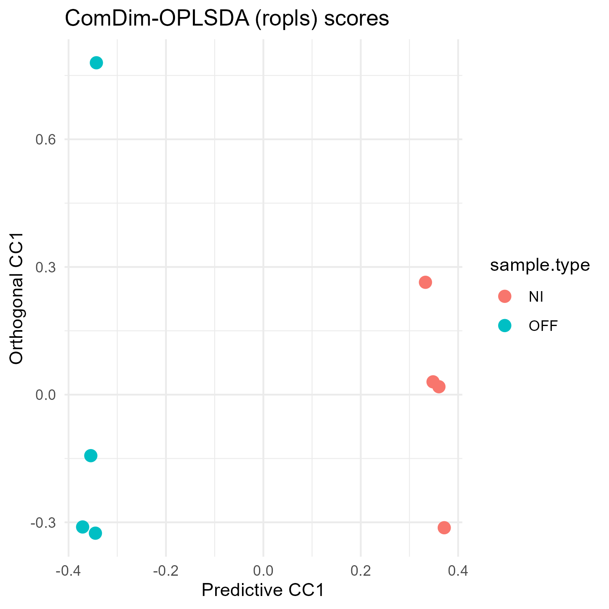